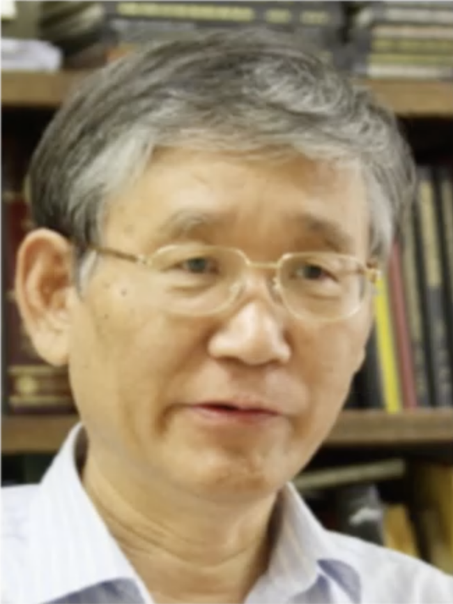

Jai-Hyung Lee Momorial Session, OSK 2023
 General Information
Prof.
Jai-Hyung Lee, who had lead the optics group at Seoul National
University for a quarter century, passed away on Janunary 18, 2020.
Prof. Lee was a president of OSK in 2002 and the general chair of CLEO-Pacific Rim 2007.
The former students of Prof. Lee organized a memorial session in the winter meeting of the Optical Society of Korea in 2023.
Venue and Date
BEXCO Convention Center, February
15 (Wed), 2023.
Session Program
Final
program
is
available here.
Session Photos, Video of Prof. Lee
Photos taken during the session is available here.
Tribute in memory of Prof. Jai-Hyung Lee, shown in the memorial session is available here.
|